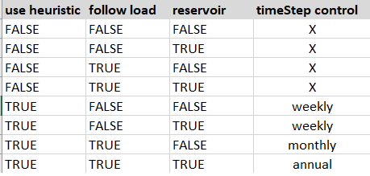

Antares new features v8.6.0
Source:vignettes/Antares_new_features_v860.Rmd
Antares_new_features_v860.Rmd
# CRAN limite CPU usage
data.table::setDTthreads(2)
library(antaresEditObject)
#> Loading required package: antaresReadThis thumbnail will present the new features in line with Antares v8.6.0 (the link is here)
There are 3 new features :
- Add new storage type “short-term storage”.
- Update parameters of thermal clusters with “pollutant emission factors”
- “Hydro Pmin” : new file “mingen.txt”
Create new study
dir_path <- tempdir()
createStudy(path = dir_path,
study_name = "test860",
antares_version = "8.6.0")
#> Warning: Parameter 'horizon' is missing or inconsistent with 'january.1st' and 'leapyear'. Assume correct year is 2018.
#> To avoid this warning message in future simulations, open the study with Antares and go to the simulation tab, put a valid year number in the cell 'horizon' and use consistent values for parameters 'Leap year' and '1st january'.Create area
createArea(name = "fr")
createArea(name = "it")Create “st-storage”
We can create new st-storage cluster with new function
createClusterST(). You can see function documentation with
?createClusterST.
By default you can call function only with two parameters
(area, cluster_name).
inflows_data <- matrix(3, 8760)
ratio_values <- matrix(0.7, 8760)
createClusterST(area = "fr",
cluster_name = "test_storage",
storage_parameters = storage_values_default(),
PMAX_injection = ratio_values,
PMAX_withdrawal = ratio_values,
inflows = inflows_data,
lower_rule_curve = ratio_values,
upper_rule_curve = ratio_values,
overwrite = TRUE)
#> x being coerced from class: matrix to data.table
#> x being coerced from class: matrix to data.table
#> x being coerced from class: matrix to data.table
#> x being coerced from class: matrix to data.table
#> x being coerced from class: matrix to data.table
createClusterST(area = "it",
cluster_name = "test_storage",
storage_parameters = storage_values_default(),
PMAX_injection = ratio_values,
PMAX_withdrawal = ratio_values,
inflows = inflows_data,
lower_rule_curve = ratio_values,
upper_rule_curve = ratio_values,
overwrite = TRUE)
#> x being coerced from class: matrix to data.table
#> x being coerced from class: matrix to data.table
#> x being coerced from class: matrix to data.table
#> x being coerced from class: matrix to data.table
#> x being coerced from class: matrix to data.tableNow you can see informations in simulation options.
opts <- simOptions()
opts$areasWithSTClusters
#> [1] "fr" "it"Read st-storages parameters
After creating “st-storage” clusters, you can read all information
with specific function readClusterSTDesc().
tab <- readClusterSTDesc()
rmarkdown::paged_table(tab)Read st-storages data
St-storages data are time series you can read for all areas or a specific area. 5 files contening one time series are generated (one per each function parameter):
- PMAX-injection.txt
- PMAX-withdrawal.txt
- inflows.txt
- lower-rule-curve.txt
- upper-rule-curve.txt
data_st_storage <- readInputTS(st_storage = "all")
#> Importing st-storage
#>
|
| | 0%
|
|=================================== | 50%
|
|======================================================================| 100%
rmarkdown::paged_table(head(data_st_storage))As you can see, the last two columns (st-storage,
name_file) give you value for each name file.
FYI : As default, reading option for hourly timestep is
8736 (see opts$timeIdMax).
Edit st-storage
It is possible to edit parameters values and data values like you want.
# edit parameters values
list_params_st <- storage_values_default()
list_params_st$efficiency <- 0.5
list_params_st$reservoircapacity <- 50
# edit data values
inflows_data <- matrix(4, 8760)
editClusterST(area = "fr",
cluster_name = "test_storage",
storage_parameters = list_params_st,
inflows = inflows_data,
add_prefix = TRUE)
#> x being coerced from class: matrix to data.table
# read parameters
tab <- readClusterSTDesc()
rmarkdown::paged_table(tab)
# read data
data_st_storage <- readInputTS(st_storage = "all")
#> Importing st-storage
#>
|
| | 0%
|
|=================================== | 50%
|
|======================================================================| 100%
rmarkdown::paged_table(head(data_st_storage))Remove st-storage
Creating or editing st-storage are done, you can also remove clusters from study.
# remove cluster
removeClusterST(area = "fr",
cluster_name = "test_storage",
add_prefix = TRUE)
# delete control
opts <- simOptions()
opts$areasWithSTClusters
#> [1] "it"The area fr is deleted cause we created only one cluster
test_storage.
# control removed parameters
tab <- readClusterSTDesc()
rmarkdown::paged_table(head(tab))
# control removed data
data_st_storage <- readInputTS(st_storage = "all")
#> Importing st-storage
#>
|
| | 0%
|
|======================================================================| 100%
rmarkdown::paged_table(head(data_st_storage))
unique(data_st_storage$area)
#> [1] "it"Parameters and data concerning this cluster in this area are removed.
Thermal pollutants parameters
Antares version 8.6.0 now provide pollutants parameters for thermal clusters. You can see the documentation on thermal clusters here.
You have global list of pollutants given by function
list_pollutants_values(). By default, parameters are set to
NULL, you can initialize all parameters with value or customize
parameters.
# create cluster with pollutants
# pollutants
all_param_pollutants <- list_pollutants_values(multi_values = 0.25)
createCluster(area = "fr",
cluster_name = "test_pollutant",
unitcount = 1L,
marginal_cost = 50,
list_pollutants = all_param_pollutants,
time_series = matrix(rep(c(0, 8000), each = 24*364), ncol = 2),
prepro_modulation = matrix(rep(c(1, 1, 1, 0), each = 24*365), ncol = 4)
)
# read parameters
param_th_cluster <- readClusterDesc()
rmarkdown::paged_table(param_th_cluster)Let’s see how to edit 3 parameters nh3, nox, pm2_5.
# editing
edit_param_pollutants <- list_pollutants_values(multi_values = 0.3)[1:3]
editCluster(area = "fr",
cluster_name = "test_pollutant",
unitcount = 2L,
list_pollutants = edit_param_pollutants)
# read parameters
param_th_cluster <- readClusterDesc()
rmarkdown::paged_table(param_th_cluster)Hydro - MINGEN file
Antares version 8.6.0 provides new file mingen.txt, this
file must respect some conditions.
The first condition to respect is the dimension with file
mod.txt.
The second one is the consistency of the data between 3 files
(mingen.txt, mod.txt,
maxpower_{area}.txt).
Full documentation is available in the function
writeInputTS(). We will see further information for values
checks.
Values checks :
Checks depends of values of parameters in hydro.ini
file.


After creating study, .txt files containing time series
are empty. We will describe steps to edit mingen.txt.
Initial values :
# see hydro parameters
path_file_hydro <- file.path("input", "hydro", "hydro.ini")
hydro_ini_values <- readIni(pathIni = path_file_hydro)
hydro_params <- c('follow load', 'use heuristic', "reservoir")
hydro_ini_values[hydro_params]
#> $`follow load`
#> $`follow load`$fr
#> [1] TRUE
#>
#> $`follow load`$it
#> [1] TRUE
#>
#>
#> $`use heuristic`
#> $`use heuristic`$fr
#> [1] TRUE
#>
#> $`use heuristic`$it
#> [1] TRUE
#>
#>
#> $reservoir
#> $reservoir$fr
#> [1] FALSE
#>
#> $reservoir$it
#> [1] FALSESteps to create mingen file :
# Initialize mingen data (time series)
mingen_data = matrix(0.06,8760,5)
# 1 - edit mod file (time series)
mod_data = matrix(6,365,5)
suppressWarnings(
writeInputTS(area = "fr", type = "hydroSTOR",
data = mod_data,
overwrite = TRUE)
)
#> Importing mingen
#>
|
| | 0%
|
|======================================================================| 100%
#> Importing hydroStorage
#>
|
| | 0%
|
|======================================================================| 100%# 2 - edit maxpower
maxpower_data <- matrix(6,365,4)
suppressWarnings(
writeHydroValues(area = "fr",
type = "maxpower",
data = maxpower_data)
)
#> x being coerced from class: matrix to data.table
#> Importing mingen
#>
|
| | 0%
|
|======================================================================| 100%
#> Importing hydroStorageMaxPower
#>
|
| | 0%
|
|======================================================================| 100%# 3 - edit mingen
suppressWarnings(
writeInputTS(area = "fr", type = "mingen",
data = mingen_data,
overwrite = TRUE)
)
#> Importing mingen
#>
|
| | 0%
|
|======================================================================| 100%
#> Importing hydroStorage
#>
|
| | 0%
|
|======================================================================| 100%
#> Importing mingen
#>
|
| | 0%
|
|======================================================================| 100%
#> Importing hydroStorageMaxPower
#>
|
| | 0%
|
|======================================================================| 100%Now we can read time series.
# read input time series
read_ts_file <- readInputTS(mingen = "all")
#> Importing mingen
#>
|
| | 0%
|
|=================================== | 50%
|
|======================================================================| 100%
rmarkdown::paged_table(head(read_ts_file))